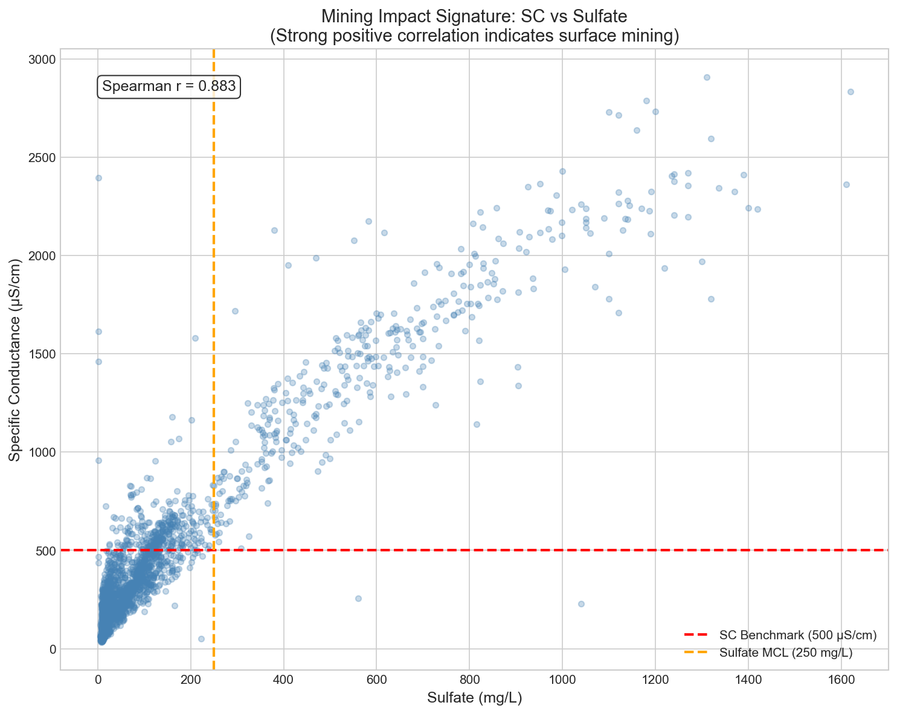

Chapter 6
The Visual Evidence
Data visualizations generated from our Python analysis pipeline, applying WV 47CSR2 standards to 55 years of ambient monitoring data.

Parameter exceedance rates against WV water quality standards

Long-term concentration trends for key parameters

Fecal coliform distribution with regulatory thresholds

Specific conductance vs. sulfate — mining impact indicator

Subwatershed impairment severity ranking

Seasonal variation in water quality parameters